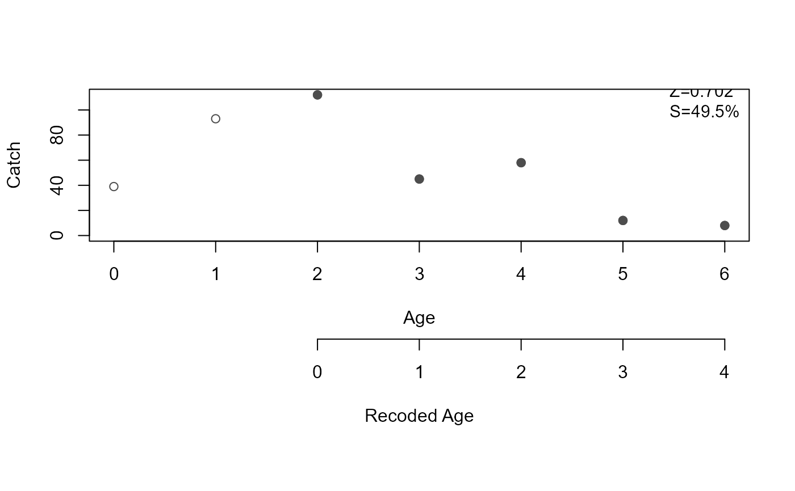
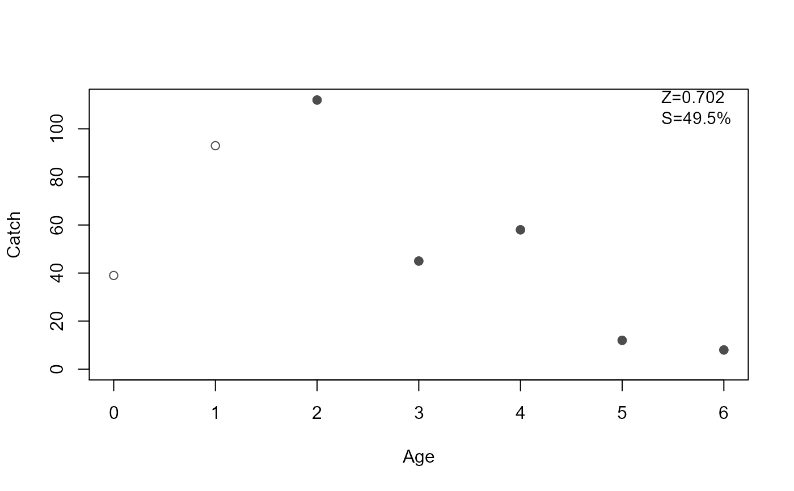
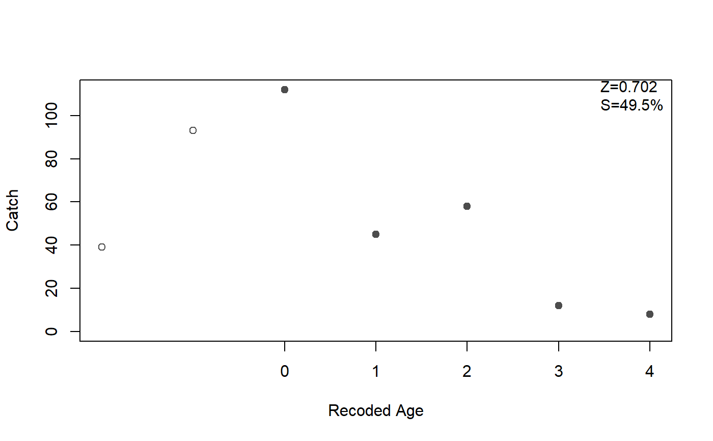
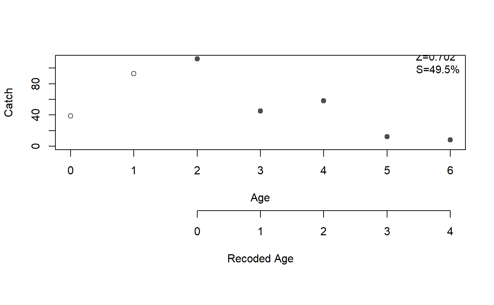
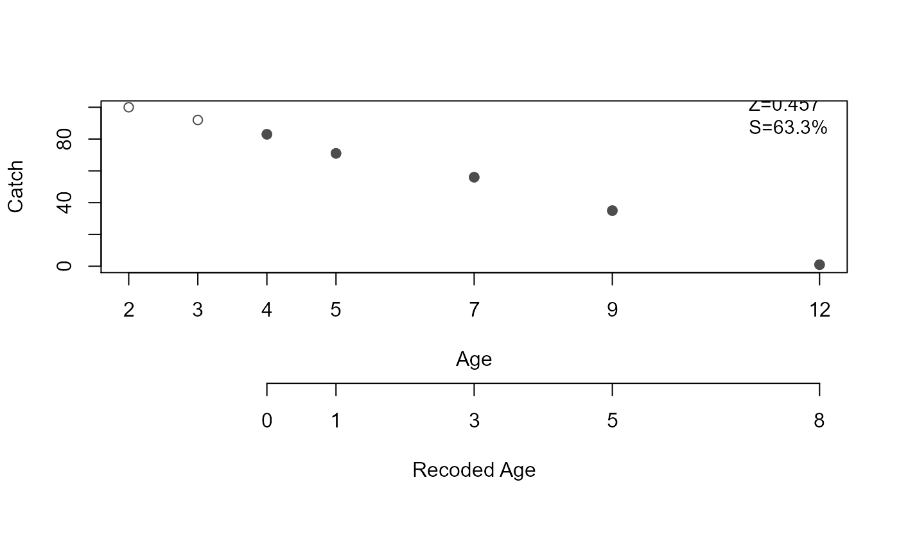

Computes the Chapman-Robson estimates of annual survival rate (S) and instantaneous mortality rate (Z) from catch-at-age data on the descending limb of a catch-curve. Method functions extract estimates with associated standard errors and confidence intervals. A plot method highlights the descending-limb, shows the linear model on the descending limb, and, optionally, prints the estimated Z and A.
chapmanRobson(x, ...) # S3 method for default chapmanRobson( x, catch, ages2use = age, zmethod = c("Smithetal", "Hoenigetal", "original"), ... ) # S3 method for formula chapmanRobson( x, data, ages2use = age, zmethod = c("Smithetal", "Hoenigetal", "original"), ... ) # S3 method for chapmanRobson summary(object, parm = c("all", "both", "Z", "S"), verbose = FALSE, ...) # S3 method for chapmanRobson coef(object, parm = c("all", "both", "Z", "S"), ...) # S3 method for chapmanRobson confint( object, parm = c("all", "both", "S", "Z"), level = conf.level, conf.level = 0.95, ... ) # S3 method for chapmanRobson plot( x, pos.est = "topright", cex.est = 0.95, ylab = "Catch", xlab = "Age", col.pt = "gray30", axis.age = c("both", "age", "recoded age"), ... )
| x | A numerical vector of the assigned ages in the catch curve or a formula of the form |
|---|---|
| ... | Additional arguments for methods. |
| catch | A numerical vector of the catches or CPUEs for the ages in the catch curve. Not used if |
| ages2use | A numerical vector of the ages that define the descending limb of the catch curve. |
| zmethod | A string that indicates the method to use for estimating Z. See details. |
| data | A data frame from which the variables in the |
| object | An object saved from the |
| parm | A numeric or string (of parameter names) vector that specifies which parameters are to be given confidence intervals If missing, all parameters are considered. |
| verbose | A logical that indicates whether the method should return just the estimate ( |
| level | Same as |
| conf.level | A number representing the level of confidence to use for constructing confidence intervals. |
| pos.est | A string to identify where to place the estimated mortality rates on the plot. Can be set to one of |
| cex.est | A single numeric character expansion value for the estimated mortality rates on the plot. |
| ylab | A label for the y-axis ( |
| xlab | A label for the x-axis ( |
| col.pt | A string that indicates the color of the plotted points. |
| axis.age | A string that indicates the type of x-axis to display. The |
A list with the following items:
age the original vector of assigned ages.
catch the original vector of observed catches or CPUEs.
age.e a vector of assigned ages used to estimate mortalities.
catch.e a vector of catches or CPUEs used to estimate mortalities.
age.r a vector of recoded ages used to estimate mortalities. See references.
n a numeric holding the intermediate calculation of n. See references.
T a numeric holding the intermediate calculation of T. See references.
est A 2x2 matrix that contains the estimates and standard errors for S and Z.
The default is to use all ages in the age vector. This is only appropriate if the age and catch vectors contain only the ages and catches on the descending limb of the catch curve. Use ages2use to isolate only the catch and ages on the descending limb.
The Chapman-Robson method provides an estimate of the annual survival rate, with the annual mortality rate (A) determined by 1-S. The instantaneous mortality rate is often computed as -log(S). However, Hoenig et al. (1983) showed that this produced a biased (over)estimate of Z and provided a correction. The correction is applied by setting zmethod="Hoenigetal". Smith et al. (2012) showed that the Hoenig et al. method should be corrected for a variance inflation factor. This correction is applied by setting zmethod="Smithetal" (which is the default behavior). Choose zmethod="original" to use the original estimates for Z and it's SE as provided by Chapman and Robson.
Tested the results of chapmanRobson against the results in Miranda and Bettoli (2007). The point estimates of S matched perfectly but the SE of S did not because Miranda and Bettoli used a rounded estimate of S in the calculation of the SE of S but chapmanRobson does not.
Tested the results against the results from agesurv in fishmethods using the rockbass data.frame in fishmethods. Results for Z and the SE of Z matched perfectly for non-bias-corrected results. The estimate of Z, but not the SE of Z, matched for the bias-corrected (following Smith et al. (2012)) results. FSA uses equation 2 from Smith et al. (2012) whereas fishmethods appears to use equation 5 from the same source to estimate the SE of Z.
11-Mortality.
Ogle, D.H. 2016. Introductory Fisheries Analyses with R. Chapman & Hall/CRC, Boca Raton, FL.
Chapman, D.G. and D.S. Robson. 1960. The analysis of a catch curve. Biometrics. 16:354-368.
Hoenig, J.M. and W.D. Lawing, and N.A. Hoenig. 1983. Using mean age, mean length and median length data to estimate the total mortality rate. International Council for the Exploration of the Sea, CM 1983/D:23, Copenhagen.
Ricker, W.E. 1975. Computation and interpretation of biological statistics of fish populations. Technical Report Bulletin 191, Bulletin of the Fisheries Research Board of Canada. [Was (is?) from http://www.dfo-mpo.gc.ca/Library/1485.pdf.]
Robson, D.S. and D.G. Chapman. 1961. Catch curves and mortality rates. Transactions of the American Fisheries Society. 90:181-189.
Smith, M.W., A.Y. Then, C. Wor, G. Ralph, K.H. Pollock, and J.M. Hoenig. 2012. Recommendations for catch-curve analysis. North American Journal of Fisheries Management. 32:956-967.
See agesurv in fishmethods for similar functionality. See catchCurve and agesurvcl in fishmethods for alternative methods. See metaM for empirical methods to estimate natural mortality.
## demonstration of formula notation cr1 <- chapmanRobson(catch~age,data=BrookTroutTH,ages2use=2:6) summary(cr1)#> Estimate Std. Error #> S 49.4600432 2.3260749 #> Z 0.7018264 0.1153428#>#> Estimate Std. Error #> S 49.4600432 2.3260749 #> Z 0.7018264 0.1153428#> Est 95% LCI 95% UCI #> S 49.4600432 44.9010202 54.0190662 #> Z 0.7018264 0.4757586 0.9278941plot(cr1)#> Estimate Std. Error #> Z 0.7018264 0.1153428#> Est 95% LCI 95% UCI #> Z 0.7018264 0.4757586 0.9278941## demonstration of excluding ages2use cr2 <- chapmanRobson(catch~age,data=BrookTroutTH,ages2use=-c(0,1)) summary(cr2)#> Estimate Std. Error #> S 49.4600432 2.3260749 #> Z 0.7018264 0.1153428plot(cr2)## demonstration of ability to work with missing age classes age <- c( 2, 3, 4, 5, 7, 9,12) ct <- c(100,92,83,71,56,35, 1) cr3 <- chapmanRobson(age,ct,4:12)#> Warning: Some 'ages2use' not in observed ages.summary(cr3)#> Estimate Std. Error #> S 63.2683658 1.8679976 #> Z 0.4569234 0.1465991plot(cr3)